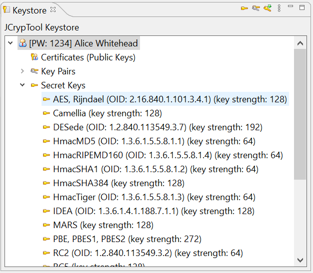

The JCrypTool keystore contains all predefined and self-generated keys for cryptographic operations. It contains among others RSA, ElGamal, AES and ECDH keys. The predefined keys allow a quick start in JCrypTool. They all have the same password 1234.

The key store is required in the standard and algorithm perspective. It provides keys for certain cryptographic operations.
In the standard perspective the keystore can be opened via the Algorithms -> Keystore menu. In the Algorithm Perspective, it is open by default. If it is not open, it can be opened via the menu Window -> Show View -> Keystore can be opened.
The key store allows you to create, view, delete, import and export keys. Many of these actions are available with a right click on a key.